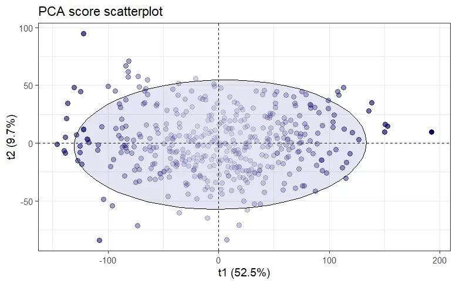
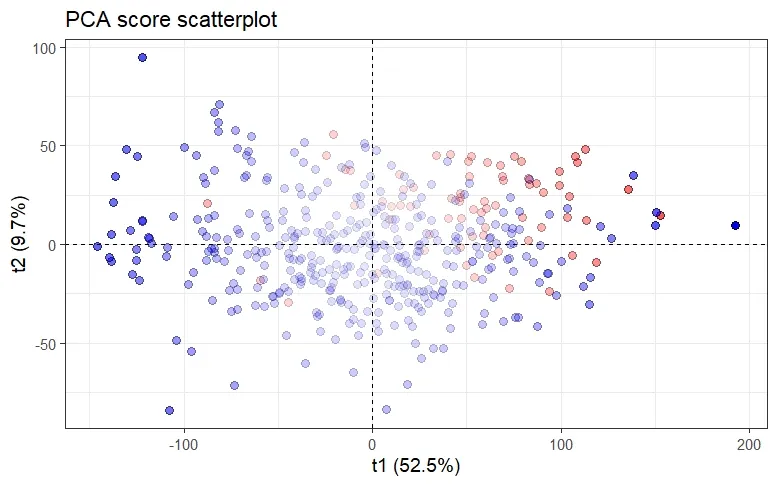
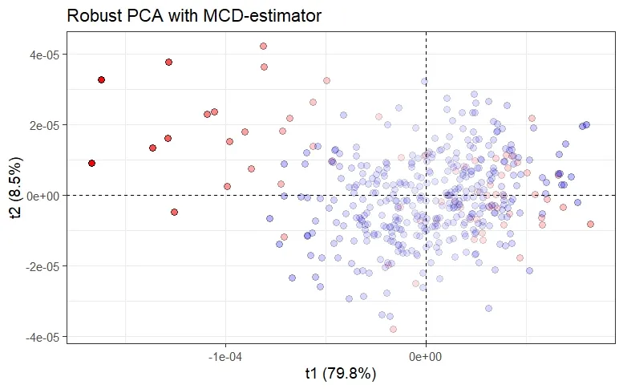
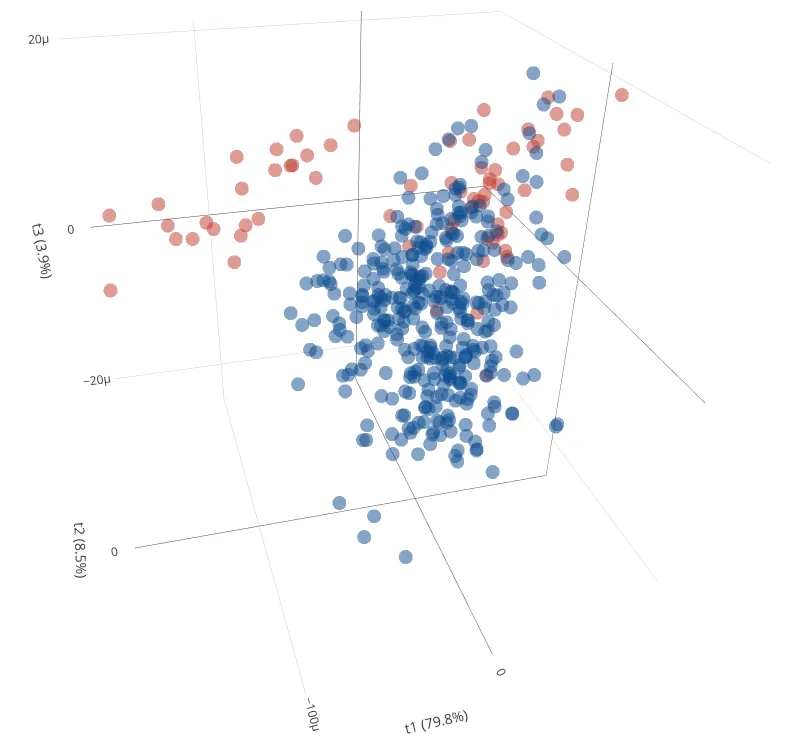
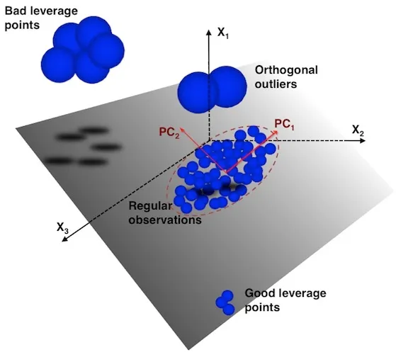
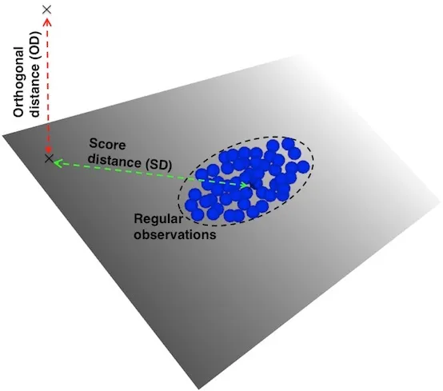
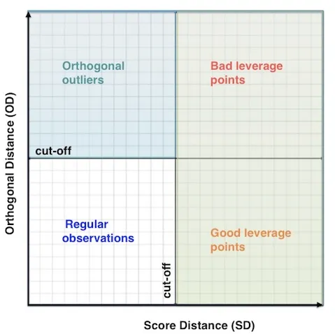
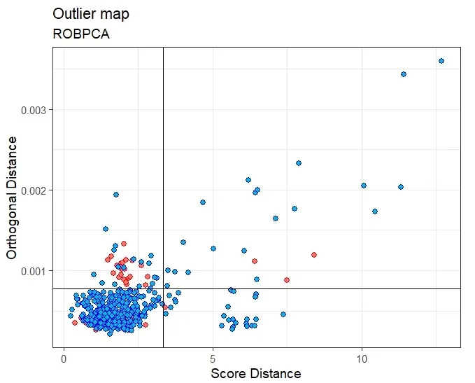

Multivariate Outlier Detection in High-Dimensional Spectral Data

Introduction
In the realm of laser spectroscopy, outliers are usually characterized by values that deviate significantly from the values of other observations, abnormally high or low — for example, humidity change, spatial heterogeneity on the samples surface, drift of the instrument parameters, human error, etc. Or by a subtle change in the characteristics of the spectra not taken into account before, since calibration models are usually trained on samples with relatively “similar” chemical and physical properties — what we call matrix effects.
“An outlier is an observation which deviates so much from the other observations as to arouse suspicions that it was generated by a different mechanism.” D. M. Hawkins
Solutions for the former case — referred to as gross outliers or extreme values — are often straightforward: we fix what was wrong and repeat the measurements if necessary. The latter case is usually more complex and requires advanced statistical methods. However, as discussed later, these subtle changes are often very difficult to detect with traditional methods in addition to being ineffective in high dimensions. The challenge is therefore to find reliable methods which are both:
- Fast
- Robust to outliers or contamination
- Applicable to high-dimensional data
In high-dimensional space, the data points are very sparse, so that all points are almost equidistant from each other. In other words, the use of Euclidean distances become meaningless. The result is that the degree of outlyingness of data points is indistinguishable from each other. For this reason, outliers are best detected by using a lower-dimensional local subspace in which only a subset of features may be relevant.
“Outliers are often hidden in the unusual local behavior of low-dimensional subspaces, and this deviant behavior is masked by full-dimensional analysis.” C. C. Aggarwal
Mahalanobis distance
Standard and widely used distance-based methods consist of computing the Mahalanobis distance. This class of methods only uses distance space to flag outlier observations. The Mahalanobis distance (MD) for the \(i\)-th observation is given by:
\[ \text{MD}_i = \sqrt{(x_i-\bar{x})^T C^{-1} (x_i-\bar{x})} \quad \text{with} \quad C = \frac{1}{n-1}X^TX \]
\(X\) is the data matrix of size \(n \times p\), where \(p\)is the number of variables and n is the number of observations. \(x_i\) is an observation (a row of \(X\)), \(\bar{x}\) is the mean vector, \(C\) is the sample covariance matrix which gives information about the covariance structure of the data — i.e. the shape of the ellipsoid specified by the covariance matrix.

To identify outlier candidates, MD² is computed and compared to a cut-off value equal to the 0.975 quantile of the Chi-Square distributionwith m degrees of freedom, m being the number of variables. This comes from the fact that MD² of multivariate normal data follows a Chi-Square distribution. Albeit, Hardin and Rocke (2005) have reported that a better approximation is found using an F-distribution, especially for small sample sizes. Nonetheless, Chi-Square distribution is still reasonably good for approximating the squared Mahalanobis distance. Hence, an observation is considered as an outlier candidate if:
\[ \text{MD}^2 = \chi^2_{m,0.975} \]
However, this approach has two major issues: (1) the arithmetic mean and the sample covariance matrix are sensitive to outliers and (2) the covariance matrix \(X^TX\) must be invertible — more formally non singular. The former is solved by applying robust statistics, whilst the latter is obviously a severe limitation for high-dimensional data often encountered in chemometrics where \(p \ggg n\). Indeed, the same limitation holds even when one chooses to use the robust version of MD, which is derived from the Minimum Covariance Determinant (MCD) estimator, instead of the classical MD.
Robust Principal Component Analysis
In chemometrics, Principal Component Analysis (PCA) is widely used for exploratory analysis and for dimensionality reduction and can be used as outlier detection method.
Indeed, PCA score is often used in conjunction with the Mahalanobis distance (or Hotelling’s \(T^2\) at 95% confidence level) to determine how far an observation is from the centroid of the elliptical region that encompasses most of the observations.

However, this approach is not robust since classical PCA relies on the sample covariance matrix C, and therefore suffers from being extremely sensitive to outliers observations, as can be seen in the above figure. The consequences of this are twofold: on one hand, the variance explained by the principal components is inflated towards the outliers direction and therefore masking observations that deviate from the regular observations — the so-called masking effect. On the other hand, regular observations might be falsely flagged as outliers — the so-called swamping effect.

Hence, to avoid these effects, a number of robustified versions of PCA based upon a robust estimate of the covariance matrix (each characterized by their breakdown point), by means of S-estimator, MM-estimator, (Fast)MCD-estimator or, the re-weighted MCD- (RMCD) estimator have been proposed over the past decades. However, these methods are limited to small or moderate dimensions since the robust estimates are only applicable when the number of observations is at least twice the number of variables \((n﹥2p)\).


There is another group of robust PCA methods that have been developed and that are better suited for handling high-dimensional data in the situation where the sample size is lower than the dimension \((p \ggg n)\). These methods are:
- Robust PCA by projection-pursuit (PP-PCA)
- Spherical PCA (SPCA)
- Robust PCA (ROBPCA)
- Robust Sparse PCA (ROSPCA)
The projection-pursuit approach to robust PCA has been initially introduced by Li and Chen (1985) and is based on finding the directions that maximize a projection index. PP-PCA uses the median absolute deviation (MAD) or Qn-estimator as projection index instead of the variance. SPCA was derived by Locantore et al. (1999) and aims to project data onto the surface of a unit sphere to alleviate outliers effect. Like PP-PCA, SPCA uses MAD or Qn-estimator as a robust estimate of spread.
More recently, ROBPCA and ROSPCA have been introduced by Hubert et al. 2005 and by Hubert et al. 2015. ROBPCA combines the projection pursuit approach with the robust covariance estimation based on the RMCD in a low dimensional space. Interestingly, ROBPCA is much faster than the aforementioned methods and has the advantage to be applicable to both symmetrically distributed data and skewed data (Hubert et al. 2009). On the other hand, ROSPCA is derived from ROBPCA, but uses Sparse PCA (Zou et al. 2006) instead of PCA.
Different Types of Outliers
After having briefly reviewed outlier detection methods based upon robust PCA, it is worth mentioning that outliers can be classified into two categories: Leverage points and Orthogonal outliers. As the figure below illustrates, the leverage points category can be split into Good leverage points and Bad leverage points. As their name suggests, one can have a positive effect while the other has a negative effect.

Leverage points and orthogonal outliers are differentiated by their respective scores and orthogonal distances. These distances tell us how far an observation is from the center of the ellipse defined by the regular observations (score = 0). The score distance (SD) is a measure of the distance between an observation belonging to the \(k\)-dimensional PCA subspace and the origin of that subspace. The orthogonal distance (OD) measures the deviation — i.e. lack of fit — of an observation from the \(k\)-dimensional PCA subspace.

Thus, leverage points are characterized by a high score distance, while orthogonal outliers are characterized by a high orthogonal distance. Likewise, good and bad leverage points are differentiated by their respective orthogonal distance. Bad leverage points display higher orthogonal distance than good leverage points.
The score distance for the \(i\)-th observation on the \(k\)-dimensional PCA subspace is given by:
\[ \text{SD}^2_i = \sum^k_{j=1}{\frac{\text{t}^2_{ij}}{l_j}} \]
where \(l\) are the eigenvalues of the MCD scatter matrix and t are the robust scores, for each \(j = 1, \cdots, k\). Like the Mahalanobis distance, the cut-off values for outlying the squared score distances are obtained from the 0.975 quantile of the Chi-Square distributionwith \(k\)degrees of freedom.
\[ \text{SD}^2 > \chi^2_{k,0.975} \]
The corresponding orthogonal distance is given by:
\[ \text{OD}_i = \| x_i-\hat{\mu}_x - P\times t_i \| \]
where \(P\) is the loading matrix, ûₓ is the robust estimate of center. The cut-off values for the orthogonal distances are obtained using the Wilson-Hilferty approximation for a Chi-Squared distribution. As a result, the orthogonal distances, raised to the power 2/3, are approximately normally distributed. Thus, the cut-off values for outliers observations are given by:
\[ \text{OD} > \left[ \text{median}\left(\text{OD}^{2/3} \right) + Z_{0.975}\text{MAD}\left(\text{OD}^{2/3} \right) \right]^{3/2} \]
where \(Z_{0.975}\) is the 0.975 quantile of the Standard Normal distribution.
Outlier map
Outlier map provides a powerful graphical tool for visually identifying the different types of outliers.

For each observation in the dataset, the score distance and the orthogonal distance are plotted on the x- and y-axis. Their respective cut-off values divide the map into four quadrants:
- Regular observations are in the bottom left corner of the map,
- Orthogonal outliers are in the upper left corner of the map,
- Leverage points are on the right side, with good leverage points at the bottom and bad leverage points at the top.

The above figure was obtained with ROBPCA. It took 15.86 seconds of execution time (laptop, 2.80GHz) to process the data matrix of size 439×7153. We can see that most of the measurements are in the quadrant of regular observations while some are flagged as orthogonal outliers and bad leverage points. Some of them are good leverage points. On the other hand, the measurements with error are mostly orthogonal outliers, although some are considered regular observations.